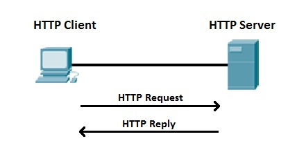

History of HTTP
HTTP, Hypertext Transfer Protocol, is what lets browsers connect to websites. Every time you open a page, your browser sends a request and gets a response back.
Over time, HTTP improved a lot. It started simple, but newer versions made websites faster and more efficient.
How HTTP Works

Basically: browser sends a request and server sends something back.
Key Terms
- HTTP
- Status Codes
- Headers
- Persistent Connections
- Multiplexing
- QUIC
HTTP Versions
| Version | Main Change |
|---|---|
| HTTP/0.9 | Only basic requests |
| HTTP/1.0 | Added status codes and headers |
| HTTP/1.1 | Keeps connections open |
| HTTP/2 | Multiple requests at once |
| HTTP/3 | Uses QUIC for better speed |